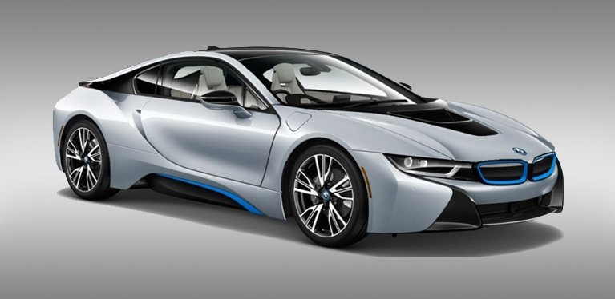

|  |
The BMW X5 is a mid-size luxury crossover produced by BMW. The first generation of the X5,
with the chassis code E53, made its debut in 1999. It was BMW's first SUV and it also featured all-wheel drive and was available with either manual or automatic transmission. In 2006, the second generation X5 was launched, known internally as the E70, featuring the torque-split capable xDrive all-wheel drive system mated to
an automatic transmission, and in 2009 the X5 M performance variant was released as a 2010 model. |